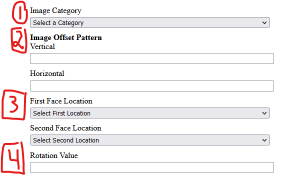
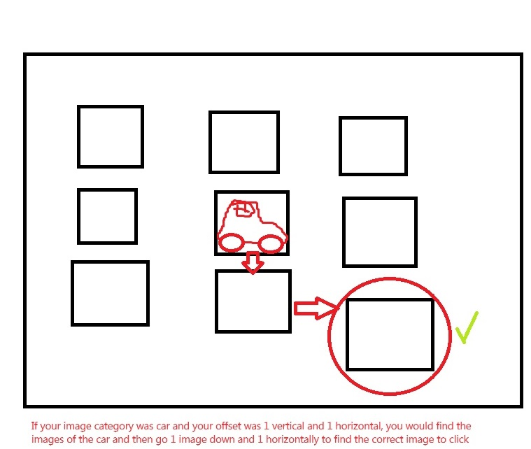
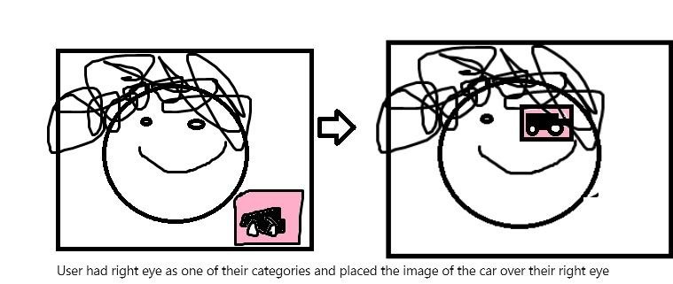

Towards the bottom of the create account page there are a few fields that you might have trouble with
This is a category of image only you will know. When you get to the image grid you will use these pictures and the offset to figure out which images to click. You will not be clicking on this image on the image gird part of the login
This is the offset from the image that you already picked out in the grid. For example, if your image category is planes, and your offset was 1 vertical and 1 horizontal, you would find the image of a plane in the grid, then go down 1 from that image and right 1 and click on that iamge.
If your offset was 2 vertical and 3 horizontal, you would go down 2 and then right 3 in order to find the image you have to click on
After completing the grid step of login correctly you will be brought to a page with your face on it and an image from your iamge category
You will align the image over the part of your face that your specified in this part of the create account procedure. For example, if you put down right eye and left eye you would align the iamge over either your right or left eye.
On the step of the image alignment on face you also have to rotate the image a specified number of degrees. For example if you chose a rotational value of 45 degrees you will type in 45 on that page and it will rotate the image 45 degrees.
type the email that you chose in the text box in order to start the login process. Then click next to go to the next page.
The webpage will ask you to open your camera, once your camera is open, then you can take a picture of your face and click upload.
The program will check if your face is associated with your email, if it is, it will send you to the next part of login.
This page will have a grid of images off it and you will need to use the offset values and image category to find the correct image.
You will use the vertical and horizontal values that you chose in the offset section from your base image, in order to pick your images.
If your offset was 2 vertical and 3 horizontal, you would go down 2 and then right 3 in order to find the image you have to click on
You will have to do this for 2 images on the page and then if you get them correct you will move on to the next page.
You will see your face and the image from the category you picked overlayed. You will use the face locations that you picked to correctly drag the image on a part of your face that you specified and then
you will type in the rotation value that you specified on login to rotate the image. If you get these parts correct you will be fully logged in.
